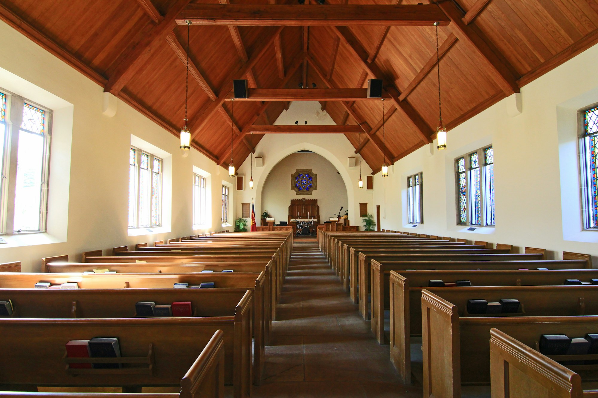

Prayer & Spiritual Support
Equip the church to pray for missionaries, lift up mission teams, and strengthen spiritual support for every outreach effort.
"Go into all the world and preach the gospel" — Mark 16:15
Nazarene Missions International equips the local church to pray, give, serve, and connect with the global family of Christ through focused support, outreach, and partnership.

Equip the church to pray for missionaries, lift up mission teams, and strengthen spiritual support for every outreach effort.
Serve neighbors through practical care, community partnerships, and generous support for families in need.
Connect our church with mission partners and the global family of Christ through prayer, giving, and service.
Stories from our mission fields show how prayer, partnership, and purposeful giving advance the gospel and transform lives.
Meet the people God has sent from our church to serve around the world.
Region: Kenya
Focus: Teaching and youth discipleship
Region: Uganda
Focus: Evangelism and community relief
Region: Tanzania
Focus: Compassionate care and leadership training
Your support helps send missionaries, fund outreach, and sustain work that shares gospel hope across nations and neighborhoods.
Support Missions